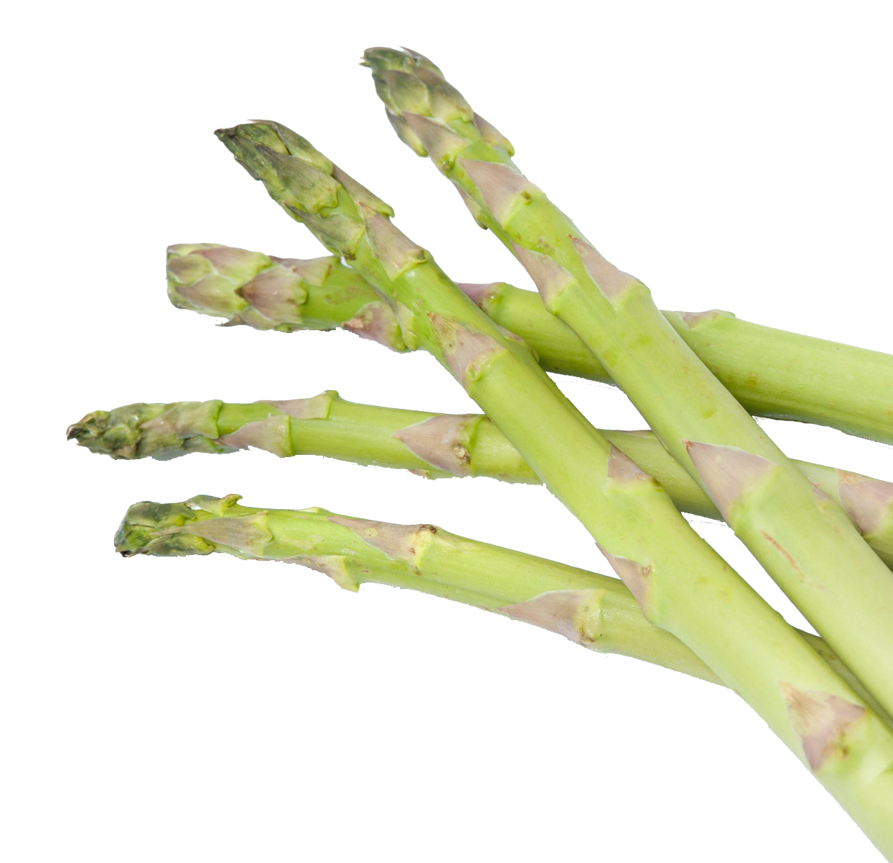
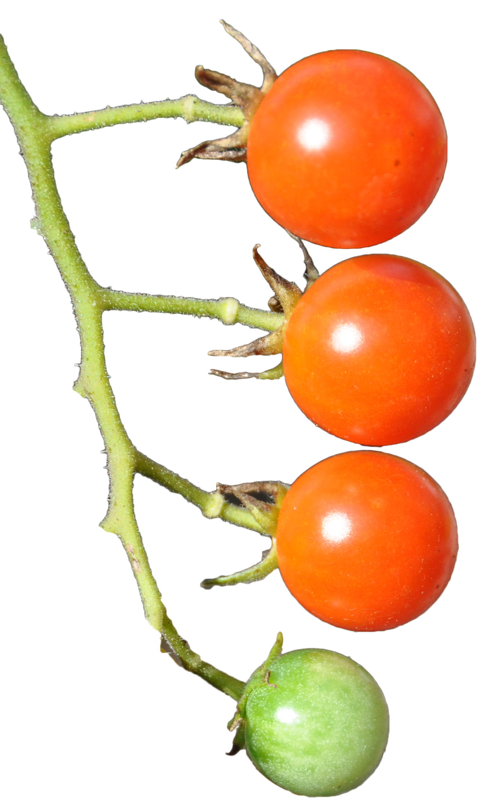
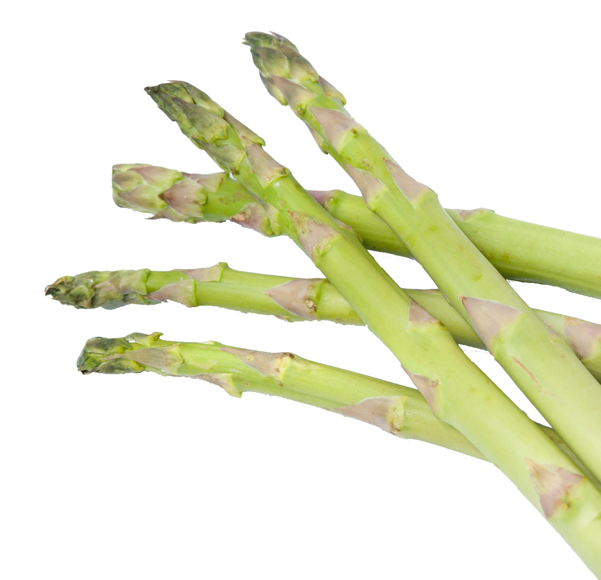
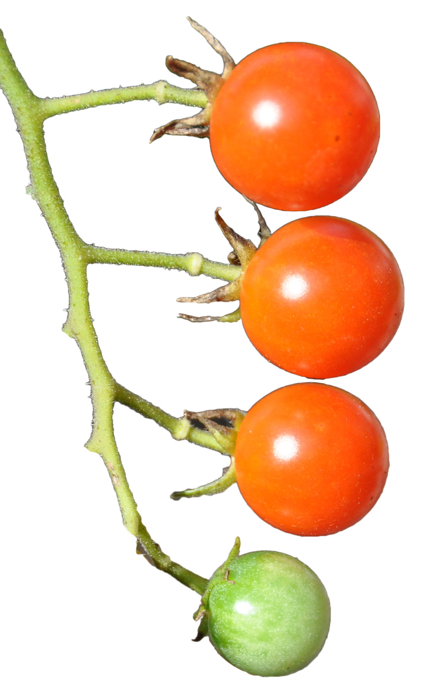

When you buy a dip or dressing at the store, chances are it is either unhealthy or tastes bad (or both). Many dressings are loaded with sodium to make up for a lack of fresh flavors.
Don't think that salads have to be boring. It is all about the dressing. If you use bottled dressing, chances are you will be disappointed. By making your own vinaigrette, you are maximizing the freshness and flavor, and your taste buds will thank you.
The easiest way to mix up a dressing is to place the ingredients in a mason jar, screw on a lid tightly, and shake it vigorously. You can then store the dressing in the fridge in the jar. Just shake it well again before serving.
This balsamic vinaigrette is excellent over a spring mix salad, but it complements most anything. Try to use high-quality vinegar and oil, in simple recipes like this, they will make a difference.
Ingredients
Add all ingredients to a mason jar. Screw the lid on tightly, and shake vigorously. Drizzle on greens and add toppings of your choice.
Hummus, a traditional Mediterranean dip made from chickpeas, is delicious to dip cut veggies, such as carrots, into, to spread on sandwiches or wraps, or to eat with a piece of warm pita bread.
I was in Pittsburgh with my father a few weekends ago, and we found a Middle Eastern restaurant on Google that got great reviews. What we didn't know was that we would be the only guest speaking English. After some confusion, we ordered, and with my chicken tawook, I got a side of hummus. This was definitely not store bought hummus! It was rich, creamy, had just the right amount of acid and salt, and the flavor melded perfectly with the chicken. When I came home, I was inspired to make my own hummus, not just to save money, but to recreate the fresh flavor you can't get from a package. While this hummus isn't quite as good as what I got at the restaurant, it is miles above what you can get in a store. To make it better, it is significantly cheaper too!
When you buy hummus in the grocery store, it can be expensive. At my local store, it costs upwards of four dollars for a 12 oz. container. Luckily, hummus is super easy to make! The only kitchen implements you need are a food processor, a can opener, and measuring cups. You don't need to heat up the oven or the stove, and can also customize the hummus to fit your personal taste. And best of all, homemade hummus will save you significant money. It costs about --- to make one batch of hummus, ---- of the price at the grocery store. And I think it tastes better too!
Put all the ingredients, except the olive oil, into a food processor. Pulse until chopped. If your food processor has an opening, drizzle in some olive oil while blending until the hummus becomes smooth. If not, add about 2 tbsp. to the food processor, pulse, and then add more oil in 1 tbsp. increments until smooth. The hummus should be smooth and creamy, without any chunks. There may be a bit of texture to it, but that is okay. Taste the hummus and add more salt and pepper to taste.
For best results, let the hummus sit in the fridge for at least 30 minutes before serving so the flavors can meld. If you can't wait, it will still taste great!